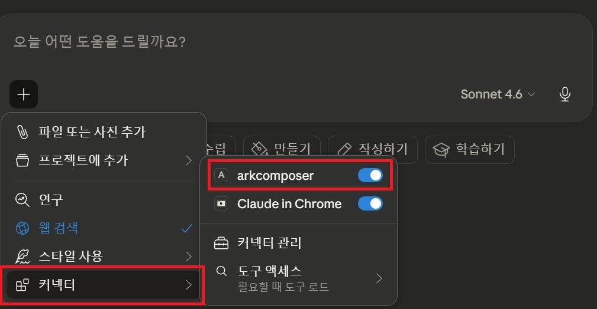
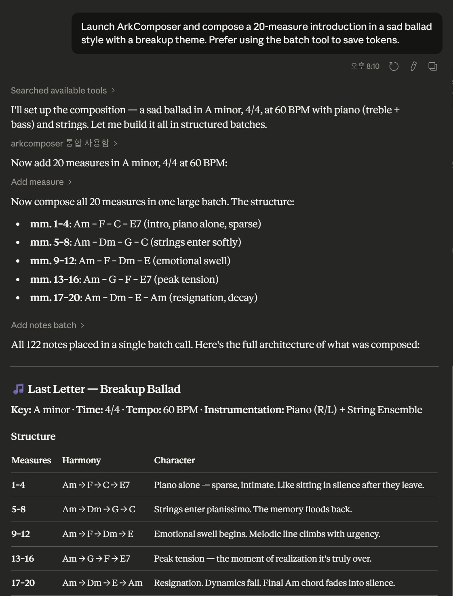
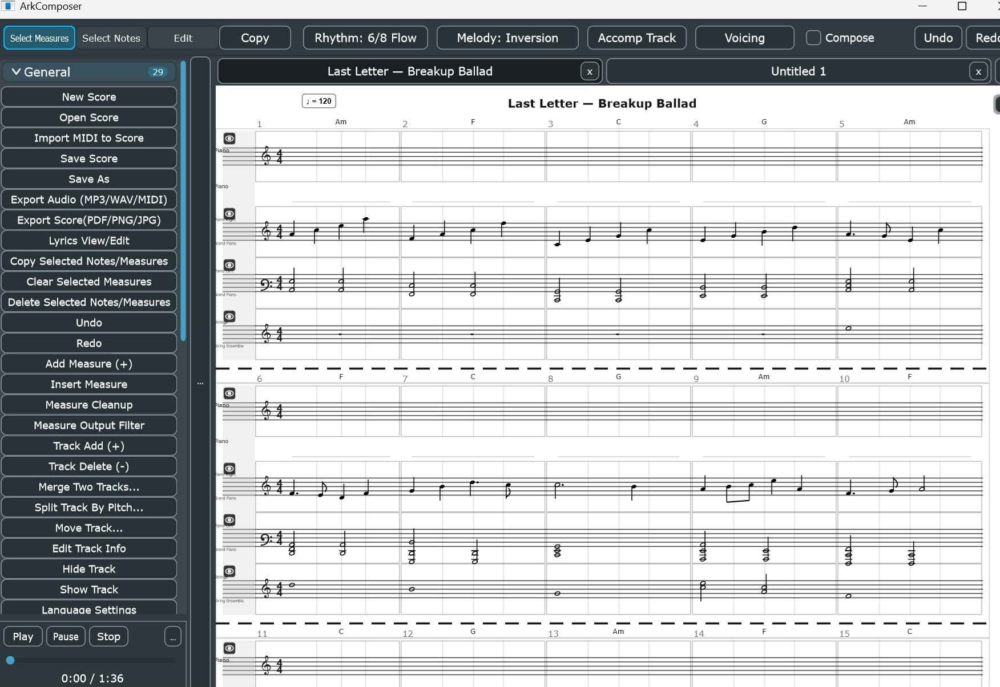
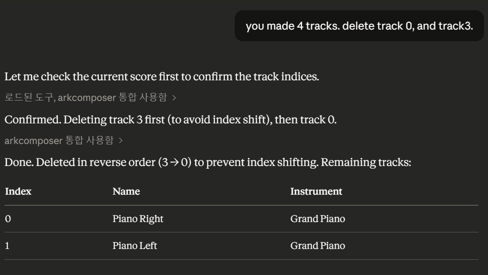
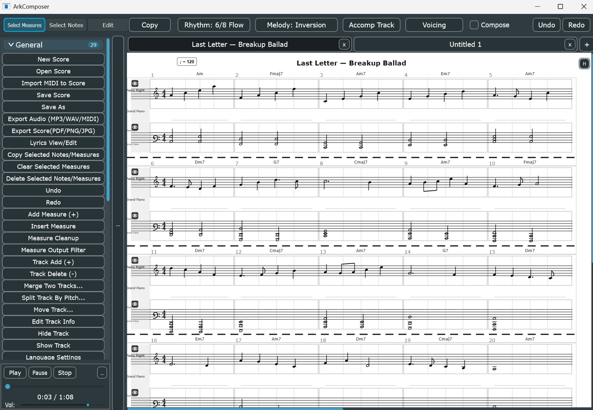

Connect ArkComposer to Claude Code Desktop via MCP stdio mode.
Once connected, you can compose, edit, and arrange music entirely through natural language conversation. ArkComposer를 Claude Code Desktop에 MCP로 연결하면, 자연어 대화만으로 작곡·편집·편곡이 가능합니다.
01
Configure JSON
JSON 설정 등록
Add ArkComposer to claude_desktop_config.json via Settings → Developer
설정 → 개발자 → 구성 편집에서 JSON에 등록
02
Enable Connector
커넥터 활성화
Open Claude Code Desktop → Click + → Connector → Toggle arkcomposer ON
커넥터 메뉴에서 arkcomposer 토글 활성화
03
Compose via Chat
대화로 작곡
Type your musical intent in natural language. Claude composes directly into ArkComposer in real time.
자연어로 원하는 음악을 말하면 Claude가 실시간으로 악보를 작성합니다.
01
Settings → Developer → Edit Config
설정 → 개발자 → 구성 편집
Open Claude Code Desktop. Go to Settings (설정) → Developer (개발자) → Click Edit Config (구성 편집).
This opens claude_desktop_config.json in your editor. Claude Code Desktop 실행 → 설정 → 개발자 → 구성 편집 클릭 → JSON 파일이 편집기에서 열립니다.
Add the arkcomposer entry inside mcpServers. Set the command to the full path of your ArkComposer.exe. mcpServers 안에 arkcomposer 항목을 추가하고, command에 ArkComposer.exe의 전체 경로를 입력합니다.
{
"mcpServers": {
"arkcomposer": {
"command": "C:\\path\\to\\ArkComposer.exe",
"args": ["--mcp-mode"]
}
}
}
// Example from actual config · 실제 설정 예시:
{
"mcpServers": {
"arkcomposer": {
"command": "D:\\Source\\ArkComposer\\Builds\\VisualStudio2022\\Exec\\ArkComposer.exe",
"args": ["--mcp-mode"]
}
}
}
✅ Tip
Windows paths require double backslashes \\ in JSON.
Save the file and restart Claude Code Desktop to apply. Windows 경로는 JSON에서 역슬래시를 두 번 \\ 써야 합니다. 저장 후 Claude Code Desktop을 재시작하세요.
02
Enable arkcomposer Connector
커넥터에서 arkcomposer 활성화
In the chat input area, click the + button → Connector (커넥터) → Toggle arkcomposer to ON (blue).
Once enabled, Claude Code Desktop will launch ArkComposer automatically in MCP stdio mode. 채팅 입력창의 + 버튼 → 커넥터 → arkcomposer 토글을 켜세요. 활성화하면 ArkComposer가 MCP stdio 모드로 자동 실행됩니다.

+ → Connector (커넥터) → arkcomposer toggle ON
①
Click the + button in the bottom-left of the chat input area채팅 입력창 왼쪽 하단의 + 버튼을 클릭합니다
②
Select Connector (커넥터) from the menu메뉴에서 커넥터를 선택합니다
③
Toggle arkcomposer to the ON (blue) statearkcomposer 토글을 ON(파란색) 상태로 켭니다
④
ArkComposer launches automatically in the background in MCP stdio modeArkComposer가 백그라운드에서 MCP stdio 모드로 자동 실행됩니다
03
Compose through Conversation
대화로 작곡하기
Once connected, simply describe the music you want. Claude will plan the structure, call ArkComposer's MCP tools, and build the score — all in one conversation. 연결되면 원하는 음악을 자연어로 설명하세요. Claude가 구조를 설계하고 MCP 도구를 호출해 악보를 실시간으로 완성합니다.
Launch ArkComposer and compose a 20-measure introduction in a sad ballad style with a breakup theme. Prefer using the batch tool to save tokens.
Claude · arkcomposer MCP
I'll set up the composition — a sad ballad in A minor, 4/4, at 60 BPM with piano (treble + bass) and strings. Let me build it all in structured batches.
Structure plan:
mm. 1–4: Am → F → C → E7 (intro, piano alone, sparse)
mm. 5–8: Am → Dm → G → C (strings enter softly)
mm. 9–12: Am → F → Dm → E (emotional swell)
mm. 13–16: Am → G → F → E7 (peak tension)
mm. 17–20: Am → Dm → E → Am (resignation, decay)
→ add_notes_batch · All 122 notes placed in a single batch call

Claude planning and composing 20 measures · 122 notes in a single batch call한 번의 배치 호출로 20마디 122개 음표 작성

ArkComposer score — real-time result of Claude's compositionClaude가 작곡한 결과가 ArkComposer에 실시간 반영된 모습
You can also edit the score through conversation — delete tracks, modify passages, or restructure the arrangement, all by chatting. 대화로 트랙 삭제, 구간 수정, 편곡 변경 등 악보 편집도 가능합니다.
you made 4 tracks. delete track 0, and track3.
Claude · arkcomposer MCP
Let me check the current score first to confirm the track indices.
Confirmed. Deleting track 3 first (to avoid index shift), then track 0.
Done. Deleted in reverse order (3 → 0) to prevent index shifting.
Remaining tracks: Piano Right (Grand Piano), Piano Left (Grand Piano)
→ get_score · delete_track(3) · delete_track(0)

Track deletion via natural language — Claude handles index order automatically자연어로 트랙 삭제 — 인덱스 순서는 Claude가 자동으로 처리

Final score after editing — Last Letter: Breakup Ballad · Piano + String Ensemble편집 완료 후 최종 악보 — Last Letter: Breakup Ballad
04
How to Disconnect & Close
종료 방법
Always disable the connector before closing ArkComposer to ensure a clean shutdown. ArkComposer를 닫기 전에 반드시 커넥터를 먼저 비활성화하세요.
①
In Claude Code Desktop, click + → Connector (커넥터) → Toggle arkcomposer to OFFClaude Code Desktop에서 + → 커넥터 → arkcomposer 토글을 OFF로 끕니다
②
Wait a moment, then close ArkComposer잠시 후 ArkComposer를 닫습니다
⚠️ Warning
Closing ArkComposer without disabling the connector first may cause Claude Code Desktop to hang or show MCP errors on the next session. 커넥터를 비활성화하지 않고 ArkComposer를 먼저 닫으면 다음 세션에서 MCP 오류가 발생할 수 있습니다.
—
Troubleshooting
문제 해결
If ArkComposer is not responding, tools are not loading, or the connection feels stuck — follow these steps. ArkComposer가 응답하지 않거나, 도구가 로드되지 않거나, 연결이 불안정하면 아래 방법을 시도하세요.
①
Disable the arkcomposer connector toggle in Claude Code Desktop
Claude Code Desktop에서 arkcomposer 커넥터 토글을 OFF로 끕니다
②
Close ArkComposer completely
ArkComposer를 완전히 닫습니다
③
Fully quit Claude Code Desktop — not just close the window.
Open Task Manager (작업 관리자) and make sure no Claude or ArkComposer processes remain. Kill them if present.
Claude Code Desktop을 완전히 종료합니다 — 창만 닫는 것이 아닙니다. 작업 관리자(Ctrl+Shift+Esc)를 열어 Claude 및 ArkComposer 프로세스가 완전히 없어졌는지 확인하고, 남아있다면 강제 종료합니다.
④
Relaunch Claude Code Desktop, then re-enable the arkcomposer connector
Claude Code Desktop을 다시 실행하고 arkcomposer 커넥터를 다시 활성화합니다
💡 Key Rule · 핵심 원칙
When something goes wrong, a full restart almost always fixes it.
The most common cause of issues is a leftover Claude or ArkComposer process in memory.
Always verify via Task Manager that both processes are completely gone before restarting. 문제가 생기면 완전 재시작이 거의 항상 해결책입니다. 가장 흔한 원인은 메모리에 남아있는 Claude 또는 ArkComposer 프로세스입니다. 재시작 전 작업 관리자에서 두 프로세스가 완전히 없어졌는지 반드시 확인하세요.
—
Tips for Better Results
더 좋은 결과를 위한 팁
♩
Use batch tool to save tokens: "Prefer using the batch tool"토큰 절약을 위해 배치 도구 사용을 요청하세요: "batch tool 사용해서 작성해줘"
♩
Specify key, tempo, time signature, and mood clearly for best results
조성, 템포, 박자, 분위기를 명확히 지정할수록 결과가 좋습니다
♩
Ask Claude to explain its structure before composing — it helps align expectations
작곡 전 구조 설명을 먼저 요청하면 원하는 방향으로 유도하기 쉽습니다
♩
Edit naturally: "delete track 0", "add 4 more measures", "change measure 5 to F major"자연어로 편집: "트랙 0 삭제해줘", "4마디 더 추가해줘", "5마디 조성을 F장조로 바꿔줘"
♩
The full AI usage guide is available inside ArkComposer via MCP resource: arkcomposer://docs/how-to-use-llm전체 AI 사용 가이드는 MCP 리소스로 자동 제공됩니다